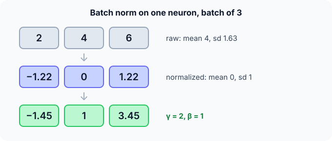

Prerequisites
- Standardization: $(x - \mu)/\sigma$.
- Mini-batches.
- Layers and pre-activations.
The analogy
Everyday analogy
Think of judges at a competition whose scoring habits drift: one day everyone scores high, the next day low. A fair organiser rescales each day's scores to the same average and spread before comparing.
Batch norm does that for every neuron, every mini-batch, so the next layer always receives inputs on a familiar scale; $\gamma$ and $\beta$ let it choose its own preferred scale.
How it works
Formula: for each feature over the batch: $\hat x = (x - \mu_B)/\sqrt{\sigma_B^2 + \varepsilon}$, then $y = \gamma \hat x + \beta$, with learned $\gamma$, $\beta$.
Start with three activations by hand
One neuron's values over a batch of three: $x = [2, 4, 6]$. Predict, then open "Check".
Example: predict before you read
Step 1. Batch mean and (population) variance.
Check
Mean 4. Squared deviations 4, 0, 4: variance $8/3 \approx 2.67$, standard deviation $\approx 1.63$.
Step 2. Cover the next line and guess: the normalized values $\hat x$.
Check
$(2 - 4)/1.63 \approx -1.22$, $0$, $1.22$.
Step 3. Scale and shift with $\gamma = 2$, $\beta = 1$.
Check
$2 \cdot (-1.22) + 1 \approx -1.45$, $1$, $3.45$.

Quick recall: Before reading further, cover the text above and say out loud: why does batch norm add $\gamma$ and $\beta$ after normalizing?
Check your answer
So the network can still choose any scale and offset, including undoing the normalization if that works best.
Finish the picture: training versus test
During training the network also keeps running averages, say mean 3.8 and variance 2.5.
- A single test input with value 5. Predict its normalized value with the running statistics.
Check
$(5 - 3.8)/\sqrt{2.5} \approx 0.76$ (then scaled by $\gamma$, shifted by $\beta$).
- Why not normalize the test input by its own "batch"? Predict the problem.
Check
A batch of one has variance 0, and predictions would depend on which other examples happen to be in the batch. Fixed running statistics make inference deterministic.
Quick recall: Without scrolling up, say out loud: what statistics does batch norm use at test time?
Check your answer
Running averages of the mean and variance collected during training, not the statistics of the test batch.
Full worked calculation
A mini-batch of 3 examples with two features on very different scales, normalised step by step, then scaled with learned $\gamma, \beta$, and finally the running statistics used at test time.
| Example | Feature 1 | Feature 1 normalised | Feature 2 | Feature 2 normalised |
|---|---|---|---|---|
| 1 | 2 | −1.225 | 10 | −0.926 |
| 2 | 4 | 0 | 20 | −0.463 |
| 3 | 6 | 1.225 | 60 | 1.389 |
| Mean / std | 4 / 1.633 | 0 / 1 | 30 / 21.6 | 0 / 1 |
-
1Batch mean (per feature)
$$\mu_1 = \frac{2 + 4 + 6}{3} = 4, \qquad \mu_2 = \frac{10 + 20 + 60}{3} = 30$$Batch norm works feature by feature, across the examples of the batch.
-
2Batch variance
$$\sigma_1^2 = \frac{(-2)^2 + 0^2 + 2^2}{3} = 2.667, \qquad \sigma_2^2 = \frac{(-20)^2 + (-10)^2 + 30^2}{3} = 466.7$$Population variance (divide by $n$). Feature 2 varies about 175 times more than feature 1: without normalisation, the next layer's weights would need very different scales.
-
3Normalise
$$\hat x = \frac{x - \mu}{\sqrt{\sigma^2 + \varepsilon}}: \quad \frac{2 - 4}{1.633} = -1.225, \qquad \frac{60 - 30}{21.6} = 1.389$$Both features now have mean 0 and standard deviation 1. The small $\varepsilon$ (e.g. $10^{-5}$) avoids dividing by 0 if a feature is constant in the batch.
-
4Scale and shift
$$y = \gamma \hat x + \beta, \quad \gamma = 2, \; \beta = 1: \quad [-1.449,\; 1,\; 3.449]$$$\gamma$ and $\beta$ are learned like weights. They let the network choose the best mean and spread for each feature, including undoing the normalisation entirely ($\gamma = \sigma$, $\beta = \mu$) if that is best.
-
5Update the running statistics
$$\mu_{\text{run}} \leftarrow 0.9\,\mu_{\text{run}} + 0.1 \cdot 4, \qquad \sigma^2_{\text{run}} \leftarrow 0.9\,\sigma^2_{\text{run}} + 0.1 \cdot 2.667$$During training, batch norm keeps an exponential average of the batch statistics. After many batches these settle near the dataset's true mean and variance, here about 4 and 2.667.
-
6Test time: one example, no batch
$$x = 5: \quad \hat x = \frac{5 - 4}{\sqrt{2.667}} = 0.612, \qquad y = 2 \cdot 0.612 + 1 = 2.225$$At test time there may be a single example, so batch statistics make no sense. The running mean and variance are used instead, which makes the prediction for an example independent of the rest of the batch.
What the numbers tell us
Batch norm turns each feature into mean 0, standard deviation 1 within the batch, then applies a learned scale $\gamma$ and shift $\beta$.
Training uses the batch's statistics; inference uses the running averages. Mixing the two up (forgetting model.eval()) is a classic bug.
The rule in plain words
Training: for each feature, normalize with the current mini-batch's mean and variance, then apply learned $\gamma$ and $\beta$; update running averages of mean and variance.
Inference: use the stored running averages instead of batch statistics.
Quick recall: Before you read the code, describe batch norm for one feature in your own words. Then check below.
Check your answer
Compute the batch mean and variance, normalize each value, then multiply by $\gamma$ and add $\beta$.
The code
Read this code after you have normalized the three values by hand. It will make more sense.
void batch_norm(double x[], int n, double gamma, double beta, double out[]) {
double mean = 0, variance = 0, eps = 1e-5;
for (int i = 0; i < n; i++) mean += x[i] / n;
for (int i = 0; i < n; i++) variance += (x[i] - mean) * (x[i] - mean) / n;
for (int i = 0; i < n; i++)
out[i] = gamma * (x[i] - mean) / sqrt(variance + eps) + beta; /* normalize, scale, shift */
}Definition
What you just did, in one line: batch normalization normalizes each feature to zero mean and unit variance over the mini-batch, then applies a learned scale $\gamma$ and shift $\beta$.
flowchart LR
X["layer output x (batch)"] --> M["batch mean, variance"]
M --> N["x̂ = (x - mean) / √(var + ε)"]
N --> Y["y = γ x̂ + β"]
Y --> NEXT["activation / next layer"]
Putting numbers on it
Quick recall: Before looking at the formula, predict: what happens with a batch size of 1?
Check your answer
The variance is 0 and every value becomes 0 after normalization: batch norm breaks down with tiny batches.
The transformation and our numbers:
$$\hat x_i = \frac{x_i - \mu_B}{\sqrt{\sigma_B^2 + \varepsilon}}, \quad y_i = \gamma \hat x_i + \beta, \qquad \mu_B = 4,\; \sigma_B^2 = 2.67 \Rightarrow \hat x = [-1.22, 0, 1.22]$$| Phase | Mean and variance from | Learned parameters |
|---|---|---|
| Training | The current mini-batch | $\gamma$, $\beta$ (2 per feature) |
| Inference | Running averages from training | Same $\gamma$, $\beta$ |
| Extra parameters per feature | — | 2 learned + 2 running statistics |
Warning
Batch norm behaves differently in training and evaluation. Forgetting to switch modes (or using batch sizes of 1–2) gives poor, unstable results. For small batches or sequence models, layer normalization is the usual alternative.
Exam tip
Give the four steps: batch mean, batch variance, normalize, scale and shift. Then add the train/test difference (running statistics). That covers almost every exam question on it.
Common mistakes
- Using the test batch's own statistics at inference.
- Forgetting $\varepsilon$, which divides by zero when the variance is 0.
- Forgetting that $\gamma$ and $\beta$ are learned, not fixed at 1 and 0.
Try it yourself
Exercise 1 (warm-up)
Normalize $[1, 3]$ with batch norm ($\gamma = 1$, $\beta = 0$, ignore $\varepsilon$).
Hint
Mean 2, population variance 1.
Answer
$[-1, 1]$.
Exercise 2 (a bit harder)
What $\gamma$ and $\beta$ make batch norm output exactly its input $[2, 4, 6]$ again? Write your answer down before you open it.
Show answer
$\gamma = \sigma_B \approx 1.63$ and $\beta = \mu_B = 4$: then $\gamma\hat x + \beta = x$. So batch norm never removes representational power; the network can learn to undo it.
Did you know?
Did you know?
Ioffe and Szegedy introduced batch normalization in 2015, explaining it as reducing "internal covariate shift"; later research suggests it mainly helps by smoothing the loss landscape.
Transformers use layer normalization instead, which normalizes across the features of one example, so it works with any batch size.
Key points to remember
If you remember one thing from each line, remember the because.
- Batch norm stabilises training because each layer receives inputs with a consistent scale.
- It needs $\gamma$ and $\beta$ because the network must still be able to choose any scale and offset.
- Inference uses running statistics because predictions shouldn't depend on which examples share a batch.
- Tiny batches break it because their mean and variance are too noisy, or undefined for one example.
- It allows higher learning rates because normalized activations keep gradients well-behaved.
Self-check questions
Answer these in order, out loud. They follow the page, so your answers become the script of your video.
- How is batch norm like rescaling judges' scores each day?
Sample answer
Each day's scores are shifted and scaled to the same average and spread so they can be compared; batch norm does that for each neuron over each mini-batch.
- Apply batch norm to [2, 4, 6] with $\gamma = 2$, $\beta = 1$.
Sample answer
Mean 4, sd 1.63, normalized $[-1.22, 0, 1.22]$, output $[-1.45, 1, 3.45]$.
- Why does the code add
epsinside the square root?A good answer mentions zero variance.
Sample answer
If all values in the batch are equal, the variance is 0 and the division would blow up; $\varepsilon$ keeps it finite.
- So what is batch normalization, in one sentence?
Sample answer
Normalizing each feature over the mini-batch to zero mean and unit variance, then applying a learned scale and shift.
- Why does batch norm use running averages at test time?
A good answer considers a single test example.
Sample answer
A single example has no meaningful batch variance, and predictions shouldn't change with the batch composition; running averages from training give fixed, reliable statistics.
- How many learned parameters does batch norm add per feature?
Sample answer
Two, $\gamma$ and $\beta$ (plus two non-learned running statistics).
- When would you use layer normalization instead?
Sample answer
With small batches or in sequence models like Transformers, because it normalizes within each example rather than across the batch.
- If you had to teach this to a friend in 2 minutes, what would you leave out, and why?
Sample answer
I'd leave out the covariate-shift debate and layer norm. I'd keep the judges analogy, the [2, 4, 6] example, and "normalize per batch, learned $\gamma$ and $\beta$, running stats at test time".
External resources
- Ioffe and Szegedy: Batch Normalization (arXiv): the original paper.
- PyTorch docs: nn.BatchNorm1d: parameters, momentum and running statistics.
- Wikipedia: Batch normalization: the method and theories of why it works.
Videos
- YouTube search: batch normalization explained: pick a clear walkthrough.